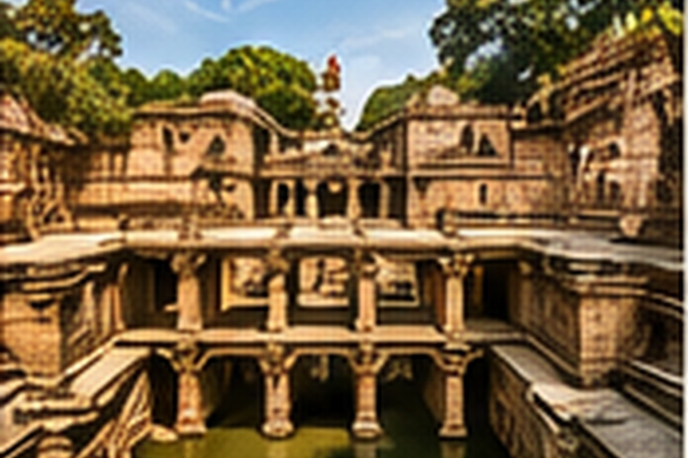

Explore Gujarat district by district and discover its heritage, culture, food, festivals and stories.

Hover over a district to highlight it. Click a district to continue.
Historic places, monuments, temples, forts and stepwells.
Languages, traditions, folk arts, dance and local communities.
Regional dishes, street food and traditional Gujarati cuisine.
Navratri, Uttarayan, Diwali and local celebrations.
People connected with Gujarat's history and cultural identity.
Gujarati and the diverse linguistic traditions of the state.